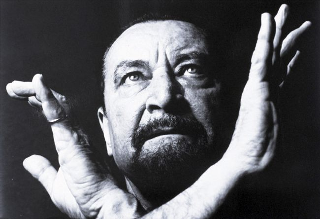

<body bgcolor="#f0f8ff">
</body>
<table border="0" align=center>
    <tr><th colspan=3 align=center>
      
<table border="0" align=center>
    </th></tr><table>
<table border="1" cellspacing="0" cellpadding=5 bordercolor="#000000" align=center>
    <tr>
         <td><center><a href="index.html"></a><footer><I><B><font size="4">Sobre a dança<I><B></footer></center></td>
         <td><center><a href="site3.html"></a><footer><I><B><font size="4">Que roupa devo usar?<I><B></footer></center></td>
         <td><center><a href="site4.html"></a><footer><I><B><font size="4">Sapatilhas de Ponta<I><B></footer></center></td>
         <td><center><a href="site5.html"></a><footer><I><B><font size="4">Melhores Bailarinos<I><B></footer></center></td>
         <td><center><a href="site6.html"></a><footer><I><B><font size="4">Melhores Escolas<I><B></footer></center></td>
<table><br>
</tr><table><br>
<table border="0" align=center>
    <tr>
        <td><I><B><font size="6">Melhores Bailarinos<B><I></td></tr>
</table>

<table border=0 align=center>
    <tr>
         <td><center><center></td>       
         <td><left><font size="4" face="Century"><B>Anna Pavlova:<B><left></td>
         <td><font size="3" face="Century"><justify>Anna Pavlova nasceu em São Petersburgo, Rússia, em 1881. Expoente do ballet clássico, ficou conhecida por seu talento fora do comum e suas interpretações intensas. De origem pobre e camponesa, precisou de muita garra para conquistar seu sonho de ser bailarina, que começou quando assistiu ao espetáculo “A Bela Adormecida” como presente de seu aniversário de 8 anos.
Rejeitada pela Escola Imperial de Ballet de São Petersburgo por sua pouca idade e baixa estatura, Pavlova não desistiu e, aos 10, conseguiu iniciar sua formação, que concluiu aos 18. Após ingressar no corpo de baile do Ballet Imperial Russo de São Petersburgo, rapidamente se destacou e, em 1906, se tornou prima ballerina.
Dona de uma figura delicada e graciosa, que fazia contraponto ao corpo compacto e musculoso valorizado pela dança à época, Anna contribuiu para uma verdadeira renovação no mundo do ballet. Ela faleceu aos 50 anos, no auge de sua fama, em decorrência de uma pneumonia.</justify></td>
        
    <tr>
         <td><center><center></td>
         <td><left><font size="4" face="Century"><B>Maurice Béjart:<B><left></td>
         <td><font size="3" face="Century"><justify>Nascido na Marselha, sul da França, em 1927, Maurice Béjart se dedicou à dança desde os 14 anos, por conselho de seu médico, que considerava sua constituição física frágil. Mesmo sendo formado em Filosofia, foi dançando que Béjart se encontrou.
Depois de investir em sua formação no ballet clássico em Londres e em Paris e dançar em renomadas companhias, ele sentiu a necessidade de criar coreografias que considerava mais expressivas.
Assim, assinou a primeira delas para o filme sueco “O pássaro de fogo” (1952), sendo também o principal intérprete. Contestador e com espírito de inovação, Béjart acreditava que o ballet não devia ser separado das massas e, durante toda sua vida, trabalhou para unir uma atmosfera humana e sensual à aura sagrada da dança.
Criador de mais de 140 coreografias, Béjart morreu aos 80 anos, deixando um legado memorável e muitos admiradores.</justify></td>
        
    </tr>
  <tr>   
         <td><center><center></td>
         <td><left><font size="4" face="Century"><B>Márcia Haydée:<B><left></td>
         <td><font size="3" face="Century"><justify>Nesta lista, o Brasil é muito bem representado por Márcia Haydée, nascida em Niterói, Rio de Janeiro, em 1937. Márcia começou a estudar ballet com apenas três anos de idade. Sua formação inclui o Royal Ballet de Londres e, posteriormente, o Grand Ballet do Marquês Cuevas, no qual atuou como solista. Na década de 60, iniciou uma parceria com o coreógrafo sul-africano John Cranko no Ballet de Stuttgart. Juntos, criaram espetáculos de relevo, como “A Megera Domada” e “Romeu e Julieta”.
Após a morte de Cranko, em 1973, Márcia passou a comandar a companhia, mas ainda continuou dançando e inspirando outros coreógrafos — entre eles Maurice Béjart e John Neumeier — além de ser conhecida como uma das partners preferidas de Baryshnikov. Atualmente, é diretora do Ballet de Santiago, no Chile.</justify></td>
        
    </tr>
  <tr>   
         <td><center><center></td>
         <td><left><font size="4" face="Century"><B>Mikhail Baryshnikov:<B><left></td>
         <td><font size="3" face="Century"><justify>Nasceu em 1948, em Riga, na então União Soviética. Filho de um oficial estalinista, teve de enfrentar a resistência da família quando afirmou seu desejo de ingressar no Ballet Kirov. Mesmo em meio à polarização da Guerra Fria, foi definido pelo crítico do The New York Times como o mais perfeito dançarino que já tinha visto.
Incomodado com os papéis secundários que o ballet tradicional russo lhe conferia por conta de sua baixa estatura, Mikhail passou a fazer parte do American Ballet Theater, na década de 70, sendo dançarino principal e seguindo o estilo contemporâneo.
Mais tarde, se tornou também diretor artístico da companhia. Por sua participação no filme “Turning Point”, concorreu ao Oscar de Melhor Ator Coadjuvante em 1977. Com passagem pelo New York City Ballet, naturalizou-se cidadão americano.
Baryshnikov, ainda, fundou a White Oak Dance Project, uma companhia itinerante, e inaugurou, no ano de 2005, o Baryshnikov Arts Center, em Nova York.</justify></td>
        
    </tr>
<tr>   
         <td><center><center></td>
         <td><left><font size="4" face="Century"><B>Vaslav Nijinsky<B><left></td>
         <td><font size="3" face="Century"><justify>Nascido em Kiev, na Ucrânia, no ano de 1888, Nijinsky foi considerado um bailarino de personalidade forte e polêmico. Seu primeiro papel de destaque viria aos 18 anos, na interpretação de Le Pavillon d’Armide.
Ao longo dos anos, Vaslav Nijinsky ficou conhecido pela técnica impecável que apresentava, além de sua leveza incomparável nos saltos. Logo depois, foi apresentado ao diretor de ballet Sergei Diaghilev, um dos grandes responsáveis pela revolução do ballet russo e que tinha em sua equipe e já consagrada Anna Pavlova.
Foi Diaghilev que transformou a vida de Nijinsky, porém ambos passaram por uma relação profissional e pessoal que mesclava amor e ódio. Fora dos palcos, o bailarino apresentava-se calmo e até com personalidade frágil. Mas sob os holofotes, transmitia uma segurança implacável. Isso fez com que ele trouxesse a figura masculina à mesma importância das mulheres no ballet.
Sob o comando de Diaghilev, Nikinsky foi bailarino exclusivo de sua companhia, o Ballet Russes, onde viveu o auge da carreira ao dançar clássicos, como O Pássaro de Fogo, Petrushka, O Deus Azul, Narciso e o Espectro da Rose.</justify></td>
        
    </tr>
  <tr>   
         <td><center><center></td>
         <td><left><font size="4" face="Century"><B>Martha Graham<B><left></td>
         <td><font size="3" face="Century"><justify>Nascida em Nova York, nos Estados Unidos, Martha Graham foi considerada uma dançarina à frente do seu tempo. Ela foi a responsável por contribuir fortemente pela mudança do ballet no mundo todo, pois tinha a opinião de que esse tipo de dança, até o momento, expressava com superficialidade os sentimentos, ao passo em que ela procurava trazer mais paixão e intensidade aos movimentos.
Observando essa diferença do que havia no ballet ali e o que ela esperava, Martha criou sua própria companhia de dança, onde foi uma das responsáveis por inspirar bailarinos e atores renomados, como Alvin Ailey, Paul Taylor e Merce Cunningham.</justify></td>
        
    </tr>
 <tr>   
         <td><center><center></td>
         <td><left><font size="4" face="Century"><B>Misty Copeland<B><left></td>
         <td><font size="3" face="Century"><justify>Misty Copeland faz parte da história do ballet atual. Recentemente, o American Ballet Theatre, uma das grandes companhias de ballet dos Estados Unidos, a colocou como uma das primeiras bailarinas do grupo, o que a faz ter o título de primeira dançarina negra da história a conquistar esse espaço.
Nascida no estado de Kansas, Misty começou tarde para os padrões da área — com 13 anos, teve sua primeira aula de ballet. Aos 17, integrava o corpo de bailarinos do American Ballet Theatre e logo depois se tornou solista da mesma companhia.
Misty é uma das grandes bailarinas da atualidade e já tem um livro de autobiografia e um documentário que contam sua história. Em 2015, a bailarina foi indicada como uma das 100 pessoas mais influentes pela revista Time.</justify></td>
        
    </tr>
 <tr>   
         <td><center><center></td>
         <td><left><font size="4" face="Century"><B>Sylvie Guillem<B><left></td>
         <td><font size="3" face="Century"><justify>Nascida em Paris em 1965, Sylvie Guillem fez ginástica rítmica até os 11 anos de idade, quando trocou o esporte pelo ballet. Foi convidada a ingressar na Ópera de Paris onde o diretor da escola reconheceu seu diferencial e potencial como bailarina, entrando para o corpo de ballet do local. Depois, Guillem fez parte do conceituado Royal Ballet, onde foi a bailarina principal.
Em 2001, Guillem ganhou o Nijinsky Awards, considerado o Oscar dos dançarinos, que a concedeu o título de melhor bailarina do mundo. Em 2006, a dançarina mudou o foco e partiu para a dança contemporânea, onde foi artista associada do grupo Sadler’s Wells Theatre em Londres. Em 2015, Guillem se apresentou pela última vez nos palcos, despedindo-se no espetáculo solo Life in Progress, que rodou países como Áustria e Japão.</justify></td>
        
    </tr>
</table>
<table border="0" align=center>
    <tr>
<br><br>
<table border=0 width=100%>
            <td bgcolor="#00000"width="100%"><font color="#f0f8ff" face="Century"> <h3>  
               <center> Share:     Contato: ceciliamoreira2508@gmail.com ou (12)98259-1020</center> 
             </h3></font></td> </tr>
           <td bgcolor="#00000"width="100%"><font color="#f0f8ff"> <h3> 
           <center> O que achou das informações? Tem alguma sugestão?</center><br>
<center><textarea cols="70" rows="10" placeholder="Escreva aqui..."></textarea></center><br>
<center><input type="submit" id="btEnviar" value="Enviar" /></center> <br> <center><input type="reset" id="btLimpar" value="Limpar" /></center> 

</table>